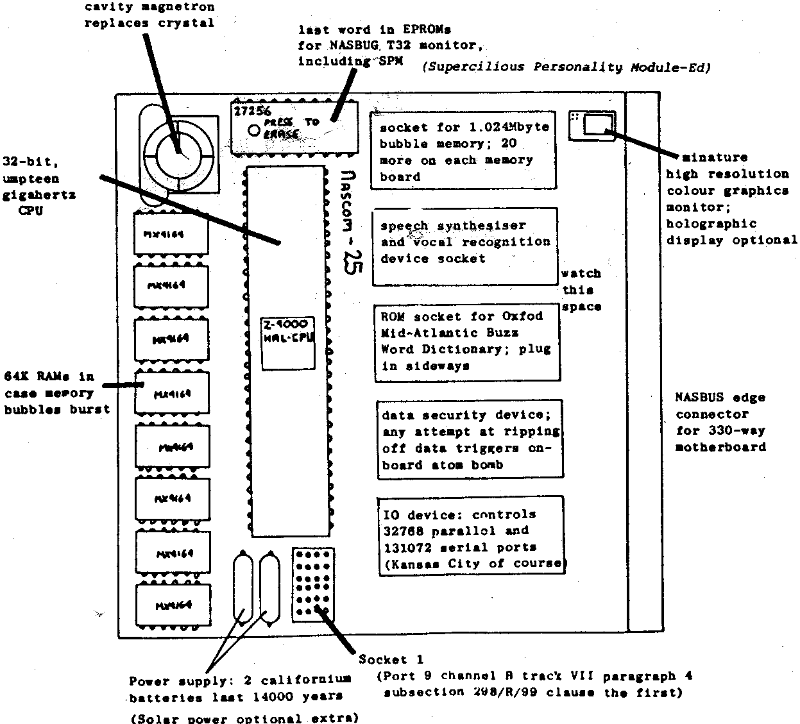

INMC News |
Summer 1979 · Issue 3 |
| Page 22 of 26 |
|---|
As a special bonus, here are four programs which are fun to have. We hope to include proper assembler listings of these programs in the software library soon, so that you will be able to see how they work. Some of you who have bought games tapes from Henry’s Radio will have seen some of them before, but there should be some which you haven’t yet seen.
You should find all the programs self explanatory, given the notes printed with them. The last column of numbers on the listings is a checksum, so don’t type it in!
The programs will run under Nasbug T2, B-BUG or Nasbug T4. We hope to reassemble them for NAS-SYS one day.
One point about REACT. It uses its own special keyboard scan routine, and it is essential that the spare keyboard input pin be tied to +5V, not to earth. (This is the same modification required for the Tiny Basic.) Connect pins 7 and 8 to pin 16 of the keyboard socket to solve the problem. This prevents the spare input lines floating.
To play Othello you need to know the rules, but you may be able to deduce them since the program doesn’t let you cheat and shows you where you can move. It scores the game and provides quite good opposition. Remember to press the space bar to let it move. It can also simply supervise a two human player game.
Richard Beal
Software Co-ordinator
INMC Committee
STOP PRESS: This preliminary board layout was found by our own Investigative Journalist on the desk of NM’s ace designer Heath Robinson-Crusoe. Concealed beneath a copy of International Times was also a breadboard prototype, but this disintegrated before it could be photographed. Robinson-Crusoe was unavailable for comment, but sources close to the Industry suggested that the device was actually available some time last year.
| Page 22 of 26 |
|---|